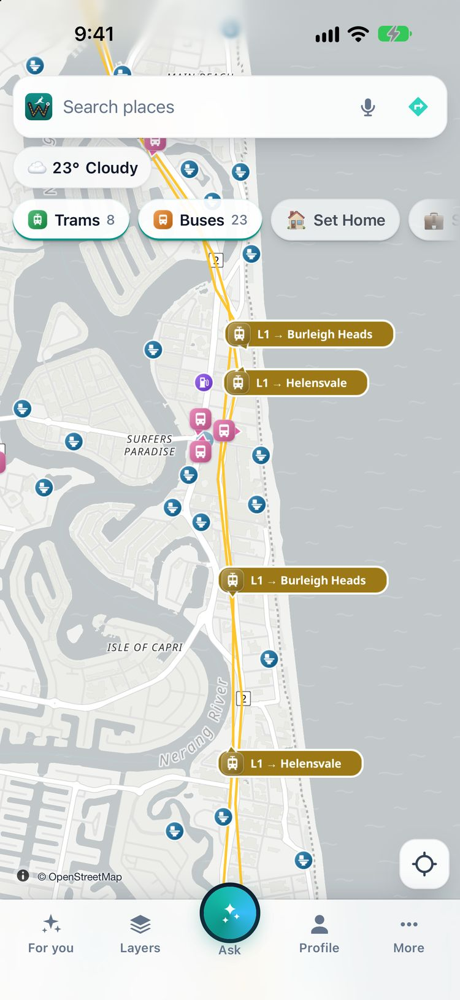

Wayaroo › 城市列表 › 黄金海岸 · English
Wayaroo 根据 Translink 的公开实时数据，在地图上显示黄金海岸行驶中的轻轨电车和公交。点击任意一辆车，即可查看它的线路、开往哪里以及接下来停靠的站点。
免费，无需注册账户，在浏览器中打开。

2026年11月13日（星期五）墨尔本时间上午9:00，Wayaroo 在黄金海岸的地图上共显示了 176 辆车（公交车 157、电车 17、火车 2）。
| 类型 | 当时的车辆数 |
|---|---|
| 公交车 | 157 |
| 电车 | 17 |
| 火车 | 2 |
车辆数在一天中会变化。数据来源：Translink，昆士兰州政府（公开的 GTFS 和 GTFS-Realtime 数据）。
在昆士兰州，Wayaroo 可规划驾车、骑行和步行行程，并显示实时车辆和每个车站的下一班车。公共交通行程规划目前只在维多利亚州和新南威尔士州提供。
Wayaroo 在此显示的票价优惠：昆士兰州所有 Translink 火车、电车、公交和渡轮实行50澳分票价（长期）。 （核实日期：2026年11月2日；应用内附有来源链接。）
有。Wayaroo 在一张地图上显示黄金海岸行驶中的电车和公交。免费，无需注册账户。
能。点击车站，或打开“为你推荐”标签页，即可以分钟查看下一班车。
来自昆士兰州政府发布的 Translink 公开实时数据。Wayaroo 是独立应用，Translink 不为其背书。请务必查看车站的显示屏。
是的。Wayaroo 免费，无需注册账户。您的设置保存在您的手机上。
其他城市（中文）：墨尔本 · 悉尼 · 布里斯班 · 阿德莱德 · 堪培拉 · 凯恩斯 · 城市列表（英文）
Wayaroo 是 Ozrsym Pty Ltd 推出的独立应用。Translink 不运营本应用，也不为本应用背书。车辆位置和时间来自运营方的数据，可能有延迟或错误。请务必查看车站的显示屏。完整的数据来源列表：数据来源（英文）。